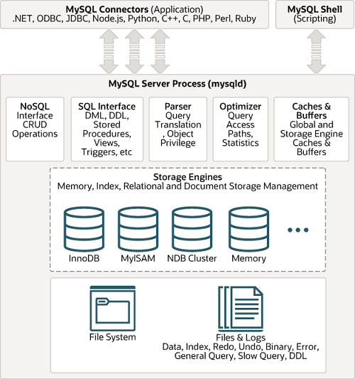
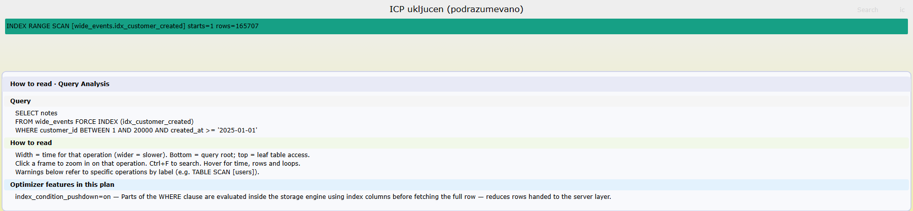
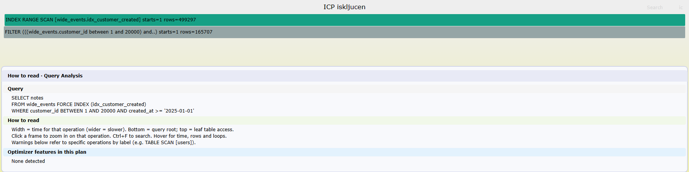

Lekcija 02 · Poglavlje 2 (Arhitektura obrade upita u MySQL-u)
Jedna arhitektonska odluka objašnjava skoro sve što MySQL radi sa upitom — i, što je za rad važnije, objašnjava gde tačno prestaje da bude „obrada upita“ a počinje da bude „čitanje sa diska“.
U Poglavlju 1 obrada upita je bila jaz koji DBMS premošćuje. MySQL taj jaz premošćuje na način koji većina drugih sistema nema: preseca sam sebe na dva sloja i između njih postavlja standardan interfejs. Iznad je serverski sloj, koji razume SQL. Ispod je mehanizam skladištenja (storage engine) — u ovom radu kraće motor — koji razume torke i stranice, a o SQL-u ne zna ništa.
Zato se ovo zove modularna arhitektura motora (pluggable storage engine architecture): motor se priključuje i menja, a serverski sloj iznad njega ostaje isti. Pokreni ovo i videćeš koliko ih tvoj server nosi odjednom.
Preduslov: nikakav — ovo radi na svakom MySQL serveru, bez ijedne tabele.
SHOW ENGINES;
Jedanaest motora, od kojih tačno jedan u koloni Support nosi
DEFAULT. Na tvom serveru (MySQL 8.4.11) to izgleda ovako:
Engine Support Transactions XA Savepoints InnoDB DEFAULT YES YES YES MyISAM YES NO NO NO MEMORY YES NO NO NO CSV YES NO NO NO ARCHIVE YES NO NO NO BLACKHOLE YES NO NO NO ... i još nekoliko, uz ndbcluster/FEDERATED koji nisu ugrađeni (Support = NO)
Pogledaj kolone Transactions, XA i
Savepoints: one se razlikuju od motora do motora. To je dokaz da te osobine
ne pripadaju serverskom sloju — da pripadaju, sve bi imale isto. Isti
parser, isti optimizator i isti izvršilac stoje iznad svih ovih redova; transakcije,
zaključavanje i klasterovani indeks stižu odozdo, iz motora. MySQL 8.4 podrazumevano pravi
InnoDB tabele, pa je za ceo ovaj rad „motor“ praktično sinonim za InnoDB.
Pre pojednostavljene skice, evo kako istu podelu crta sam priručnik — sa svim konektorima, kešovima i motorima koje ovaj rad ne pominje, ali koji pokazuju da je slika iznad stvarna, ne izmišljena za potrebe predavanja.

MySQL Server Process);
motori su zasebni, zamenljivi moduli ispod nje.Za ovaj rad je bitna samo jedna linija iz te slike — granica između sive kutije i modula ispod nje. Ovo je pojednostavljena skica te iste granice, ona koju treba da umeš da nacrtaš na tabli: crvena traka je jedina stvar koju vredi zapamtiti napamet — sve ostalo se izvodi iz nje.
mysql, aplikacija)THD)handler API
jedini put naniže — poziv metode, ne čitanje stranice
Test kojim se svaka sporna stavka razrešava: da li se menja ako zameniš motor? Ako se menja, motorova je. Priručnik na to pitanje odgovara i izričito, jednom fusnotom uz svoju tabelu osobina motora.
Sad isti crtež, ali kao redosled. Ovo su imena koja stvarno postoje u izvornom kodu MySQL-a 8.4, a ne uopšteni nazivi iz udžbenika.
do_command() → dispatch_command()
Nit dodeljena konekciji čita komandu sa mreže. Ovde se još ne zna da je reč o SQL-u —
radi se o protokolu.dispatch_sql_command()
Ulaz u obradu SQL-a. Dokumentacija u kodu: „Parse an SQL command from a text string and
pass the resulting AST to the query executor.“handler → InnoDB
Prelaz preko šava. Odavde naniže više nema SQL-a, samo „daj mi sledeću torku“.
Kroz sve korake putuje jedan te isti objekat, THD — stanje sesije. Priručnik opisuje
model niti, a izvorni kod objekat:
mysql_parse() kao ulaznu
tačku, nemoj je citirati: u 8.4 ona više ne postoji. Preimenovana je u
dispatch_sql_command(). Ovo je provereno u izvornom kodu na oznaci
mysql-8.4.6, u sql/sql_parse.cc.
handlerŠav nije metafora — to je jedna C++ klasa. Svaki motor je implementira, a serverski sloj poznaje samo nju.
Evo zašto je to bitno za obradu upita. Iterator koji čita celu tabelu — onaj isti koji ćeš u
Poglavlju 5 videti u EXPLAIN FORMAT=TREE kao Table scan — u svom telu
ne radi ništa što liči na čitanje diska:
// sql/iterators/basic_row_iterators.cc (oznaka mysql-8.4.6) int TableScanIterator::Read() { ... while ((tmp = table()->file->ha_rnd_next(m_record))) { ... } }
table()->file je pokazivač na handler. Iterator, dakle,
ne čita stranicu — on zove metodu motora i čeka da mu motor vrati torku.
Kako je motor našao tu torku (iz bafer pula, sa diska, kroz B+ stablo) serverski sloj
ne zna i ne treba da zna. To je cela poenta poglavlja u jednoj rečenici.
Sam zaglavlje handler.h deli metode na dva sloja: javne omotače koje zove server
(ha_rnd_init, ha_rnd_next, ha_index_read_map,
ha_index_next …) i virtuelne metode koje motor mora da napiše:
Da je podela savršeno čista, motor bi vraćao torke a serverski sloj bi ih filtrirao. Ali to znači da torke koje će ionako biti odbačene ipak moraju da pređu šav. Zato MySQL pravi rupu u sopstvenoj apstrakciji: spuštanje uslova u indeks (index condition pushdown, ICP).
Preduslov: tabela obrada_upita.wide_events sa indeksom
idx_customer_created (customer_id, created_at) iz examples/00-setup/.
Traje oko minut po upitu — čita stvarnih pola miliona torki.
USE obrada_upita; -- (A) ICP uključen (podrazumevano stanje): EXPLAIN ANALYZE SELECT notes FROM wide_events FORCE INDEX (idx_customer_created) WHERE customer_id BETWEEN 1 AND 20000 AND created_at >= '2025-01-01'; -- (B) Isti upit, ali sa zabranjenim spuštanjem: SET optimizer_switch = 'index_condition_pushdown=off'; EXPLAIN ANALYZE SELECT notes FROM wide_events FORCE INDEX (idx_customer_created) WHERE customer_id BETWEEN 1 AND 20000 AND created_at >= '2025-01-01'; SET optimizer_switch = 'index_condition_pushdown=on';
Plan se ne menja u pristupnom putu — u oba slučaja je isti sken opsega preko istog indeksa. Menja se broj čvorova. Ovako je izgledalo uživo na tvom serveru:
(A) ICP uključen — jedan čvor: -> Index range scan on wide_events using idx_customer_created ..., with index condition: ((customer_id between 1 and 20000) and (created_at >= TIMESTAMP'2025-01-01 00:00:00')) (actual time=0.856..15283 rows=165707 loops=1) (B) ICP isključen — dva čvora, jedan iznad drugog: -> Filter: ((customer_id between 1 and 20000) and (created_at >= TIMESTAMP'2025-01-01 00:00:00')) (actual time=0.25..45760 rows=165707 loops=1) -> Index range scan on wide_events using idx_customer_created ... (actual time=0.249..45718 rows=499297 loops=1)
Vremena zavise od mašine i od toga šta je u bafer pulu, pa ne juri sekunde. Broj torki je ono što se ne menja od pokretanja do pokretanja.

EXPLAIN ANALYZE FORMAT=JSON za ovaj upit, uživo sa ovog servera, iscrtan
alatom myflames.
Ovo je najčistiji dokaz da šav postoji, jer se u planu vidi kao
okvir. U slučaju (B) iznad skena stoji Filter: — to je posao
serverskog sloja. Sken mu dodaje 499.297 torki, filter
propušta 165.707, dakle 333.590 torki je prešlo šav samo da bi odmah bilo
bačeno. U slučaju (A) okvir Filter je nestao: isti uslov sada
piše kao with index condition unutar samog skena, jer ga proverava motor, nad
torkom indeksa, pre nego što uopšte dohvati široku torku sa kolonom notes. Isti
rezultat, isti indeks, ista 165.707 torki na izlazu — razlika je samo u tome koji sloj
radi filtriranje. Ovde je to ispalo i oko tri puta brže.
Ograničenje. Namerno ignoriši procene (rows=1 naspram
stvarnih 165.707) i kolonu cene. Zašto procene toliko promašuju i kako se ta razlika čita jeste
tema Poglavlja 4. Ovde te zanima samo jedno: da li Filter
čvor postoji ili ne postoji.
Druga rupa je suptilnija i mnogo korisnija za odbranu rada. Optimizator stalno postavlja pitanje „koliko torki će ovo vratiti?“. Odgovor mu stiže sa obe strane šava, iz dva odvojena izvora koji se mogu i ne slagati.
random dives— uzorkovanjem stranica, ne čitanjem svih torki.
mysql.innodb_index_stats. Prefiks innodb_ nije slučajan.ANALYZE TABLE … UPDATE HISTOGRAM.information_schema.COLUMN_STATISTICS.Mnemonik koji vredi zapamtiti: statistika indeksa pripada motoru, histogrami kolona pripadaju serveru. Histogrami i postoje zato da bi dali selektivnost za kolone koje nisu indeksirane — tamo gde motor nema šta da kaže.
Preduslov: ista tabela. Nastavak je nalaza iz Lekcije 01, gde je
kardinalnost na country_code bila 14 a histograma nije bilo — sad se vidi zašto su
to dve odvojene stvari.
USE obrada_upita; -- (1) Šta motor misli: broj različitih vrednosti, i na kolikom uzorku. SELECT index_name, stat_name, stat_value, sample_size FROM mysql.innodb_index_stats WHERE database_name = 'obrada_upita' AND table_name = 'wide_events' AND index_name = 'idx_country_code'; -- (2) Šta server ima: pre nego što histogram zatražiš — ništa. SELECT SCHEMA_NAME, TABLE_NAME, COLUMN_NAME FROM information_schema.COLUMN_STATISTICS WHERE SCHEMA_NAME = 'obrada_upita'; -- (3) Zatraži ga. Ovo ne dira indeks i ne pita motor ništa osim podataka. ANALYZE TABLE wide_events UPDATE HISTOGRAM ON country_code WITH 16 BUCKETS; -- (4) Sada isti upit iz (2) vraća red. SELECT COLUMN_NAME, JSON_UNQUOTE(JSON_EXTRACT(HISTOGRAM, '$."histogram-type"')) AS tip, JSON_LENGTH(JSON_EXTRACT(HISTOGRAM, '$.buckets')) AS kantica FROM information_schema.COLUMN_STATISTICS WHERE SCHEMA_NAME = 'obrada_upita'; -- (5) VRATI SERVER U PREĐAŠNJE STANJE. Poglavlje 4 računa na to -- da histograma nema, pa ovaj red nije opcion. ANALYZE TABLE wide_events DROP HISTOGRAM ON country_code;
(1) motor — procena iz uzorka: index_name stat_name stat_value sample_size idx_country_code n_diff_pfx01 14 16 idx_country_code n_leaf_pages 5082 NULL (2) server — prazan skup, nijedan red (4) server, posle ANALYZE ... UPDATE HISTOGRAM: COLUMN_NAME tip kantica country_code singleton 15
Uporedi dva podebljana broja. Motor kaže da kolona ima 14 različitih vrednosti — i to je zaključio uzorkujući 16 stranica od ukupno 5.082. Server, pošto je napravio histogram, dobija 15 kantica, po jednu za svaku stvarnu vrednost. Motor nije pogrešio nasumično: on ne broji, nego procenjuje, i to mu je posao. Ali to znači da optimizator radi sa brojem koji je nastao iz 0,3% stranica indeksa.
Razlika je zapravo veća nego 14 naspram 15. Kardinalnost je samo
broj vrednosti, pa iz nje optimizator može da izvede jedino ravnomernu
raspodelu: 5.000.000 / 14 ≈ 357.000 torki po vrednosti. Histogram nosi
raspodelu, i za 'US' daje kumulativnu učestalost od oko
0,70, dakle oko 3,5 miliona torki. Vrednost 'US' zauzima ~70%
tabele, pa je histogram tu tačan a kardinalnost promašuje deset puta. Isto pitanje, dva sloja,
dva odgovora.
Ograničenje. Primamljivo je zaključiti „znači, napravi histogram i
procena se popravi“. Provereno je uživo na ovom serveru i nije tako: sa
histogramom na country_code procena za upit iz Lekcije 01 ostaje
rows=2.45e+6, nepromenjena. Priručnik kaže zašto: „The optimizer prefers range
optimizer row estimates to those obtained from histogram statistics“ — kad indeks postoji,
optimizator radije zaroni u indeks nego što pita histogram. Zbog čega je onda procena i dalje
pogrešna jeste Poglavlje 4; za Poglavlje 2 dovoljno je da znaš da
brojevi dolaze iz dva različita sloja.
Sedam pitanja, jedan tačan odgovor po pitanju. Klikni i odmah dobijaš objašnjenje — ako pogrešiš, pročitaj zašto pre nego što pređeš na sledeće.
Bez vraćanja na tekst. Cilj je da vidiš šta ti je stvarno ostalo.
1. Šta je najpouzdaniji test da li neka osobina pripada motoru a ne serveru?
Ako se menja sa motorom, ne može biti u zajedničkom sloju. Zato tabela 18.1 u priručniku, koja te osobine poredi po motorima, i jeste dokaz: transakcije i zaključavanje variraju, pa su motorove.
2. Šta tačno radi iterator koji čita celu tabelu kada mu zatreba torka?
Iterator nikada ne dodiruje stranicu. On zove metodu motora preko
table()->file i čeka torku; kako je motor nalazi, serverski sloj ne zna.
3. Kada je ICP isključen, po čemu se to vidi u stablu plana?
Uključen ICP uvlači uslov u sam sken (with index condition); isključen
ga vraća u serverski sloj, gde postaje vidljiv Filter čvor iznad skena. Izlaz upita
je isti u oba slučaja.
4. Gde se čuvaju histogrami kolona u MySQL-u 8.4?
Histogrami su serverski: prave se sa ANALYZE TABLE … UPDATE HISTOGRAM
i čitaju iz information_schema.COLUMN_STATISTICS. Kardinalnost je motorova i stoji
odvojeno, u mysql.innodb_index_stats.
5. Zašto je kardinalnost 14 na koloni sa 15 stvarnih vrednosti?
InnoDB radi „random dives“: ovde 16 uzorkovanih stranica od 5.082. Kardinalnost je procena po konstrukciji, i to je normalno ponašanje, a ne zastarela statistika.
6. Koja je ulazna tačka za obradu SQL naredbe u MySQL-u 8.4?
mysql_parse() u 8.4 više ne postoji — preimenovana je u
dispatch_sql_command(). Ostale dve funkcije postoje, ali su kasnije faze, ne ulazna
tačka.
7. Šta znači podrazumevana vrednost one-thread-per-connection?
Nit je vezana za konekciju, a ne za upit. Zato je paralelnost u MySQL-u pre svega između konekcija — granica paralelnosti unutar jednog upita je tema Poglavlja 7.
Rezultat: 0 / 0